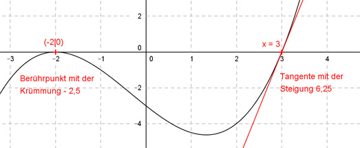

Aufgabe 46 Der Graph einer ganzrationalen Funktion 3. Grades berührt die x-Achse an der Stelle x = -2 und hat dort die Krümmung -2,5, die Tangente an der Stelle x = 3 hat die Steigung 6,25. Wie lautet seine Funktionsgleichung?  Allgemeine Form einer ganzrationalen Funktion 3. Grades: f(x) = ax3 + bx2 + cx + d f’(x) = 3ax2 + 2bx + c f’’(x) = 6ax + 2b 4 Bedingungen: 1. Berührt die x-Achse an der Stelle x = -2 bedeutet zum einen: f(-2) = 0 --> a * (-2)3 + b * (-2)2 + c * (-2) + d = 0 --> -8a + 4b - 2c + d = 0 I 2. Berührt die x-Achse an der Stelle x = -2 bedeutet zum anderen: f’(-2) = 0 --> 3a * (-2)2 + 2b * (-2) + c = 0 --> 12a - 4b + c = 0 II 2. Hat dort die Krümmung -2,5 bedeutet: f’’(-2) = -2,5 --> 6a * (-2) + 2b = -2,5 --> -12a + 2b = -2,5 III 3. Die Tangente an der Stelle x = 3 hat die Steigung 6,25 bedeutet: f’(3) = 6,25 --> 3a * 32 + 2b * 3 + c = 6,25 --> 27a + 6b + c = 6,25 IV II * (-1) + IV -12a + 4b - c = 0 27a + 6b + c = 6,25 --------------------- 15a + 10b = 6,25 V III * (-5) + V 60a - 10b = 12,5 15a + 10b = 6,25 ------------------- 75a = 18,75 |:75 a = 0,25 a = 0,25 in V eingesetzt: 15 * 0,25 + 10b = 6,25 3,75 + 10b = 6,25 |-3,75 10b = 2,5 |:10 b = 0,25 a = 0,25 und b = 0,25 in IV eingesetzt: 27 * 0,25 + 6 * 0,25 + c = 6,25 6,75 + 1,5 + c = 6,25 8,25 + c = 6,25 |-8,25 c = -2 a = 0,25 und b = 0,25 und c = -2 in I eingesetzt: -8 * 0,25 + 4 * 0,25 - 2 * (-2) + d = 0 -2 + 1 + 4 + d = 0 3 * d = 0 | -3 d = -3 Gesuchte Funktionsgleichung: f(x) = 0,25x3 + 0,25x2 - 2x - 3